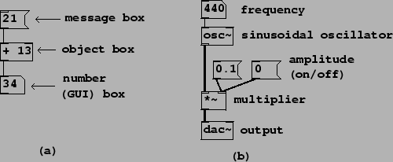

Next: How to find and
Up: About the Software Examples
Previous: About the Software Examples
Contents
Index
Pd documents are called
patches. They correspond roughly to the
boxes in the abstract block diagrams shown earlier in this chapter, but in
detail they
are quite different, because Pd is an implementation
environment, not a specification language.
A Pd patch, such as the ones shown in
Figure 1.10, consists of a collection of
boxes
connected in a network.
The border of a box tells you how its text is interpreted and how the box
functions. In part (a) of the figure we see three types of boxes. From
top to bottom they are:
- a
message box.
Message boxes, with a flag-shaped border, interpret the text as a message to
send whenever the box is
activated (by an incoming message or with a pointing device). The message in this
case consists simply of the number ``21".
- an
object box.
Object boxes have a rectangular border; they interpret the text to create
objects
when you load a patch. Object boxes may hold hundreds of different
classes of objects--including oscillators, envelope generators, and other
signal processing modules to be introduced later--depending on the text
inside. In this example, the box holds an adder. In most Pd patches, the
majority of boxes are of type ``object". The first word typed into an object
box specifies its
class,
which in this case is just ``+". Any additional (blank-space-separated) words
appearing in the box are called
creation arguments,
which specify the initial state of the object when it is created.
- a
number box.
Number boxes are a particular type of
GUI box. Others include push buttons and
toggle switches; these will come up later in the examples.
The number box
has a punched-card-shaped border, with a nick out of its top right corner.
Whereas the appearance
of an object or message box is fixed when a patch is running, a number box's
contents (the text) changes to reflect the current value held by the box. You
can also use a number box as a control by clicking and dragging up and down, or
by typing values in it.
In Figure
1.10 (part a) the message box, when clicked, sends the message ``21" to an
object box which adds 13 to it. The lines connecting the boxes carry data
from one box to the next; outputs of boxes are on the bottom and inputs on top.
Figure 1.10:
(a) three types of boxes in Pd (message, object, and GUI); (b) a simple patch to output a
sinusoid.
|  |
Figure 1.10 (part b) shows a Pd patch which
makes a sinusoid with controllable frequency and amplitude. The connecting
patch lines are of two types here; the thin ones are for carrying sporadic
messages,
and the thicker ones (connecting the oscillator, the multiplier, and the output
dac~ object) carry digital audio signals. Since Pd is a real-time
program, the audio signals flow in a continuous stream. On the other hand, the
sporadic messages appear at specific but possibly unpredictable instants in
time.
Whether a connection carries messages or signals depends on the box
the connection comes from; so, for instance, the +
object outputs messages, but the *~ object
outputs a signal. The inputs of a given object may or may not accept
signals (but they always accept messages, even if only to convert them to
signals). As a convention, object boxes with signal inputs or outputs
are all named with a trailing tilde (``~") as in ``*~"
and ``osc~".
Next: How to find and
Up: About the Software Examples
Previous: About the Software Examples
Contents
Index
Miller Puckette
2006-12-30